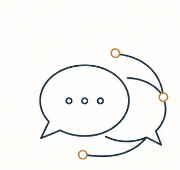
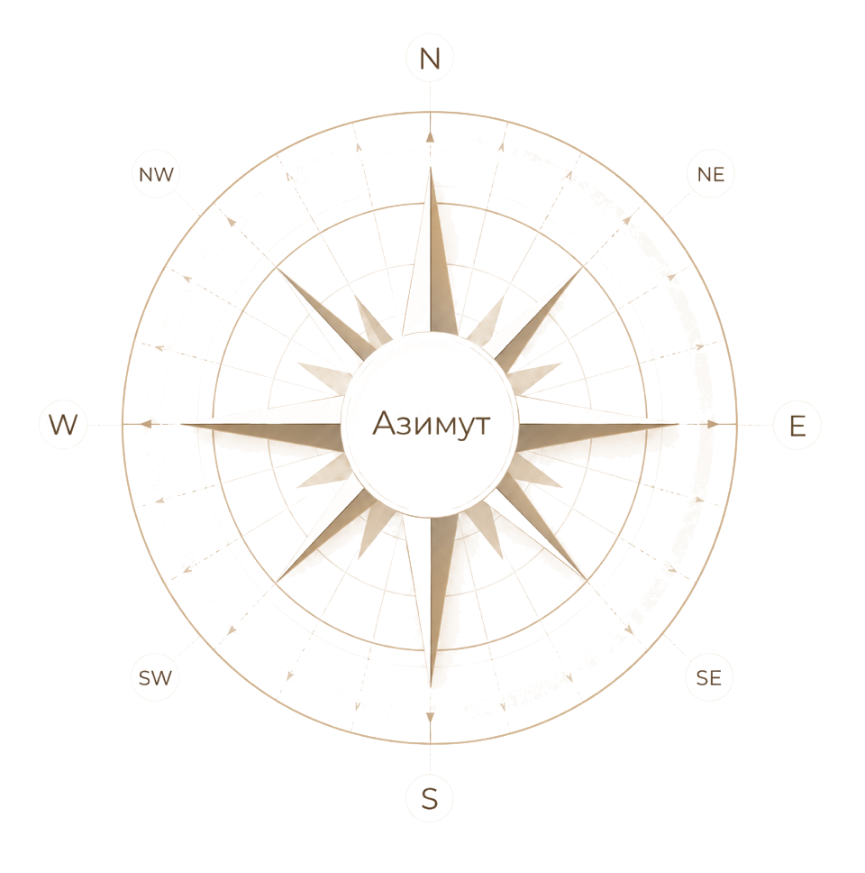
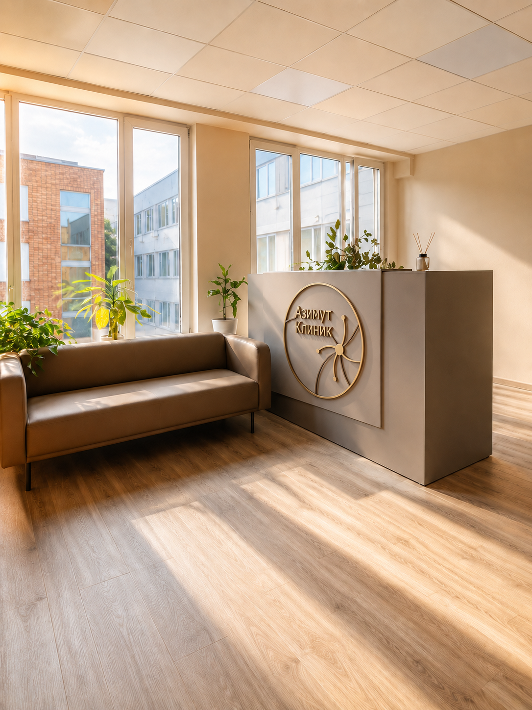

Анонимная медицинская помощь 24/7
С нами по Азимуту к себе
Психиатрия, наркология, психологическое тестирование и психологическая помощь для взрослых и подростков с 14 лет. Анонимно, комплексно, безопасно — в клинике, на дому и дистанционно.
Бережный маршрут к внутренней устойчивости: от первого разговора до понятного плана помощи.

- Анонимно
- Круглосуточно
- Москва, МО и соседние области
- Онлайн-консультации по РФ
- Для взрослых и подростков с 14 лет
3 направления
Клиника работает в 3 направлениях
Три направления помощи — один понятный маршрут
Мы смотрим на ситуацию комплексно: учитываем состояние человека, обстоятельства, риски, запрос семьи и подбираем формат помощи, с которого безопаснее начать.
Наркология
Анонимная помощь при зависимостях, запойных состояниях, интоксикации и поддержка родственников.
С чем помогаем
- алкогольная зависимость и запойные состояния;
- наркотическое опьянение и ухудшение самочувствия;
- консультации родственников;
- выезд специалиста на дом.
Ориентиры по стоимости
Консультация психиатра-нарколога — 7 500 ₽
Программа детоксикации — 17 500 ₽
Капельница стандарт — от 6 000 ₽
Психиатрия
Консультации и диагностика состояния при тревоге, панических атаках, депрессивных состояниях и кризисах.
С чем помогаем
- тревога и панические атаки;
- депрессивные состояния;
- подбор дальнейшего маршрута помощи;
- подростковые трудности с 14 лет.
Ориентиры по стоимости
Первичная консультация психиатра — 7 500 ₽
Повторная консультация психиатра — 7 000 ₽
Дистанционная консультация психиатра — 7 000 ₽
Психология и тестирование
Психологическая поддержка, тестирование и помощь при эмоциональном напряжении, выгорании, семейных кризисах и подростковых трудностях.
С чем помогаем
- эмоциональное выгорание;
- семейные кризисы;
- психологическое тестирование;
- онлайн-помощь и консультации родственников.
Ориентиры по стоимости
Индивидуальная психотерапия 45 минут — 7 500 ₽
Семейная психотерапия — 10 000 ₽
Психологическое тестирование — от 8 000 ₽
Цены являются предварительными и уточняются администратором. Итоговая стоимость зависит от состояния пациента, адреса, времени обращения и выбранного формата помощи.
Что лечим
Заболевания и состояния
Помогаем при состояниях, которые влияют на жизнь, отношения и безопасность
Раздел собран по логике ведущих медицинских клиник: не как каталог диагнозов для самодиагностики, а как навигация по ситуациям, с которыми можно обратиться за профессиональной оценкой.
Депрессивные состояния
Подавленность, потеря интереса, нарушения сна, чувство безнадёжности и снижение энергии.
Тревожные и панические расстройства
Панические атаки, постоянное напряжение, навязчивое беспокойство и телесные проявления тревоги.
Биполярное расстройство
Резкие перепады настроения, периоды подъёма и спада, сложности с режимом и импульсивностью.
Зависимое поведение
Алкогольная, никотиновая и другие формы зависимости, а также поддержка семьи пациента.
Нарушения пищевого поведения
Ограничения в питании, переедание, тревога вокруг веса и образа тела.
Посттравматический стресс
Последствия травматичных событий, флешбэки, избегание, раздражительность и нарушения сна.
Психические расстройства позднего возраста
Изменения настроения, тревога, нарушения поведения и адаптации у пожилых пациентов.
Расстройства шизофренического спектра
Состояния, требующие врачебной диагностики, наблюдения и понятного плана лечения.
Хронический стресс и выгорание
Истощение, раздражительность, снижение продуктивности, трудности восстановления и отдыха.
Наши специалисты
Наша команда
В центре работают специалисты направлений психиатрии, психологии, наркологии и психологической диагностики. Мы помогаем не только пациентам, но и родственникам, когда важно спокойно понять, с чего начать обращение.
На первичном контакте администратор уточнит ситуацию, подскажет подходящий формат консультации и поможет выбрать специалиста без лишнего давления и медицинских сложностей.
Смотреть направления
Пространство помощи
Спокойная среда для разговора, диагностики и выбора дальнейшего пути
Визуальная часть сайта подготовлена для предпрезентации: кабинет, специалисты и карточки создают ощущение современного медицинского центра без давления и перегруза.
Узнать о подходе
Маршрут
Форматы помощи
Форматы, преимущества и этапы обращения в одном месте
В клинике
Очная консультация специалиста в спокойной и конфиденциальной обстановке. Подходит для первичной диагностики, психологического тестирования и плановой помощи.
На дому
Выезд специалиста на дом по Москве и Московской области, когда пациенту сложно приехать самостоятельно или требуется помощь в привычной обстановке.
Дистанционно
Онлайн-консультации по видеосвязи для пациентов из разных регионов РФ. Удобно для повторных встреч, предварительной оценки запроса и сопровождения.
По телефону
Краткая первичная консультация помогает сориентироваться, какой специалист и формат обращения могут подойти в вашей ситуации.
Преимущества
- анонимность и конфиденциальность обращения;
- круглосуточная связь;
- помощь в разных форматах;
- комплексный подход без давления на пациента.
Как проходит обращение
- Вы оставляете заявку или звоните.
- Администратор уточняет ситуацию.
- Мы подбираем подходящий формат помощи.
- Вы проходите консультацию или диагностику.
- Специалист предлагает дальнейший план.
Вы не одни
Доверьтесь нам
Когда состояние кажется запутанным, важно не оставаться с ним один на один. Мы поможем спокойно разобраться в ситуации, подобрать специалиста и определить первый безопасный шаг.
- помогаем начать обращение без давления;
- консультируем родственников;
- подбираем формат помощи;
- объясняем дальнейшие шаги простым языком.

Оформление обращения
Оставьте заявку на подбор формата помощи
Администратор свяжется с вами, уточнит задачу и предложит ближайший понятный шаг: звонок, онлайн-консультацию, визит в клинику или выезд специалиста.